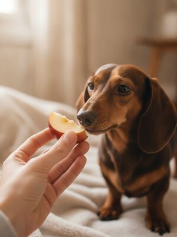
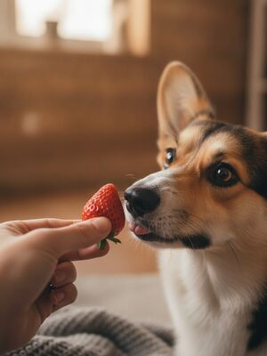
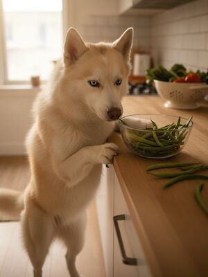
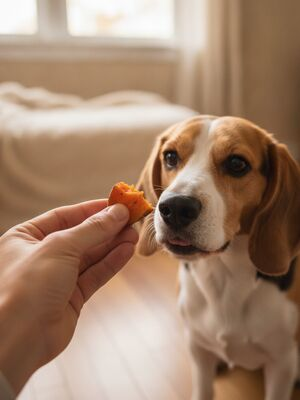
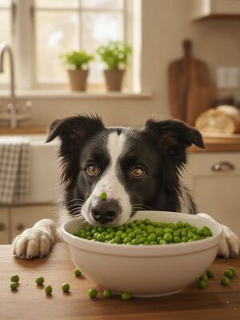
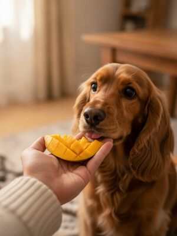

Good news — plenty of fruits and veggies make healthy, low-calorie treats for dogs. Here are 15 safe picks, how much to give, and how to serve them right.
1. Banana Safe to feed
Bananas are a safe, healthy treat for dogs — rich in potassium and fiber, but high in sugar.
See the full guide on dogs & banana →
2. Apple Safe to feed
Apple flesh is a crunchy, vitamin-rich treat. Remove the core and seeds, which contain trace cyanide.
See the full guide on dogs & apple →3. Carrot Safe to feed
Carrots are an excellent low-calorie treat and great for chewing. Serve raw or cooked.
See the full guide on dogs & carrot →4. Blueberries Safe to feed
Blueberries are a superfood treat — packed with antioxidants and low in calories.
See the full guide on dogs & blueberries →5. Watermelon Safe to feed
Watermelon is hydrating and safe — just remove the seeds and rind, which can cause blockages.
See the full guide on dogs & watermelon →
6. Strawberries Safe to feed
Strawberries are safe and full of vitamin C and fiber, but sugary — keep portions small.
See the full guide on dogs & strawberries →7. Cucumber Safe to feed
Cucumber is a crunchy, hydrating, very low-calorie treat — ideal for dogs watching their weight.
See the full guide on dogs & cucumber →
8. Green beans Safe to feed
Plain green beans are a favorite low-calorie treat, full of fiber and vitamins.
See the full guide on dogs & green beans →9. Pumpkin Safe to feed
Plain cooked pumpkin is fiber-rich and great for digestion. Avoid sugary pie filling.
See the full guide on dogs & pumpkin →
10. Sweet potato Safe to feed
Cooked, plain sweet potato is a nutritious, fiber-rich treat dogs digest well.
See the full guide on dogs & sweet potato →11. Broccoli In moderation
Broccoli is safe in small amounts but contains compounds that can cause gas and stomach upset in larger servings.
See the full guide on dogs & broccoli →
12. Peas Safe to feed
Green peas are a safe, protein and vitamin-rich treat and a common ingredient in dog food.
See the full guide on dogs & peas →13. Celery Safe to feed
Celery is a crunchy, low-calorie treat that is high in fibre. Cut into small pieces to prevent choking.
See the full guide on dogs & celery →
14. Mango Safe to feed
Ripe mango flesh is a sweet, vitamin-packed treat. Always remove the pit, which is a choking and blockage risk.
See the full guide on dogs & mango →15. Pineapple Safe to feed
Fresh pineapple is a safe, vitamin-rich treat for dogs in small amounts. Skip the tough core and skin.
See the full guide on dogs & pineapple →Other guides you'll like
Foods toxic to dogsSafe fruits & veggiesFoods cats can't eatThanksgiving dangers
By the CanMyPet Editorial Team · Reviewed against ASPCA Animal Poison Control, the American Kennel Club (AKC) and Pet Poison Helpline · Last updated June 2026.